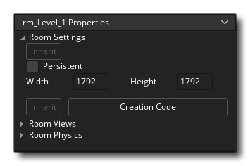
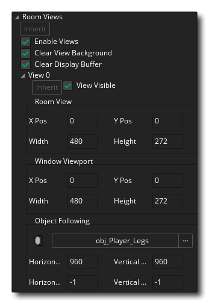
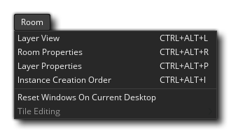

The room editor is where you create your game rooms. Every game requires at least one room to run, and in the room you can place instances, sprites, tiles, paths and backgrounds. Each of these different assets can be placed on their own unique layer which can then be ordered however you wish in the Layers Editor. Due to the complexity of the room editor, we'll give you first a brief overview of the most important features, and then you can find more in-depth details from the section headers listed below.
When you create a room resource, you can right click  on it in
the resource tree to open the room menu. This will permit you to
create child rooms (see Inheritance below), open up the room
properties for changing, add a new resource group to better
organise the rooms, rename the room or delete it. Note that you can
click and drag a room up or down in the resource tree to reposition
it, as well as drag a room onto another one to "attach" it to that
room visually (it will appear indented beneath the other room,
normally what you'd want to show parent/child inheritance), or drag
it onto a group folder to add it there.
on it in
the resource tree to open the room menu. This will permit you to
create child rooms (see Inheritance below), open up the room
properties for changing, add a new resource group to better
organise the rooms, rename the room or delete it. Note that you can
click and drag a room up or down in the resource tree to reposition
it, as well as drag a room onto another one to "attach" it to that
room visually (it will appear indented beneath the other room,
normally what you'd want to show parent/child inheritance), or drag
it onto a group folder to add it there.
Note that the room editor is itself a workspace
and as such you can click  on the tab and drag it off of the main
window into a new window of its own - perhaps in another display,
for example. You can also place it back into the main window by
dragging the tab to the top of the IDE and releasing the mouse
button.
on the tab and drag it off of the main
window into a new window of its own - perhaps in another display,
for example. You can also place it back into the main window by
dragging the tab to the top of the IDE and releasing the mouse
button.
Interface
The user interface for the room editor is simple to navigate and split in various discrete sections. Those parts of the editor that are docked - the room properties and the layer editor as well as the different layer property sections - can also be removed from the dock by simply dragging them out into the workspace, and they can be adeed back into the docks again by dragging them to the sides or the bottom of the workspace.

The room editor places things onto layers within the room. Each layer is at a discrete "depth", where those that appear at the bottom of the list in the layer window will be drawn under those that appear near the top.
IMPORTANT! There is a minimum and maximum layer depth of -16000 to 16000. Anything placed on a layer outside that range will not be drawn although all events will still run as normal.
Layers are created by clicking
the appropriate button for the type of layer you want to create, which are:
Instance - this type of layer will hold all instances for your game
Tile - this type of layer is for drawing sprites to as tile sets
Path - this layer contains path data (you can only have one path per layer)
Asset - this layer id for visual assets to be placed on (ie: sprites)
Background - This type of layer defines a background, which is essentially a single colour or image that is drawn
You can also create a layer folder using the folder button
where you can group selected layers together, as well as delete the selected layers with the delete button
. Each of these layer types are discussed here in more detail.
Note that you can toggle inheritance for the layer editor which will affect layer order and visibility. The visibility itself can be set by clicking the eye icon
beside each of the layers, or you can click
.

The room layer properties window will change depending on the currently selected layer in the layer editor. Each window will have different properties and lists and you will be able to edit fundamental details for how the layer is displayed and what is actually on the layer. Please see here for more detail.
The room properties are split into the following three sections:
The room settings section is where you can set the inheritance toggle for the settings, as well as name the room and whether it is persistent or not. Normally, when you leave a room and return to the same room later, that room is reset to its initial settings. This is usually fine for most games but it may not be what you want in, for example, an RPG or any non-linear game, where you want to come and go between rooms and have them be way you left it the last time. Checking the box labelled Persistent will do exactly that. The room status will be remembered and when you return to it later, it will be exactly the same as you left it, with it only being reset to the start state when the game is reset. Note that there is one exception to this - if you marked certain objects as being persistent, instances of this object will not stay in the room but move to the next room.
After that you have the option to Clear Display Buffer. This option is similar to the previous one, only it fills the back-buffer with a colour. If you know that the views are going to be covering the whole screen at all times or that you have a fullscreen background being drawn, then you can un-check this (which saves a redraw and so helps optimise your game), but if you have overlapping views that, when on the screen leave open spaces, or your background has any transparency, you should check this so that those area where there is no view are filled in with the draw colour of your choice. Currently this colour can only be set through code using window_set_colour().
NOTE: If you are using automatic aspect ratio correction (as set in the Game Options), then you should always have this checked otherwise you can get odd effects over the "letterbox" that your game is drawn in. If you do not use this option then you can un-check this and get a small boost to your games performance (especially noticeable on Android and other mobile platforms). Below this you see the list of available views (you can define a maximum of eight) with the information about where these views are to be drawn contained in the boxes below. First of all you must indicate whether the view should be Visible when the room starts by checking the appropriate box, and if you wish to use views, make sure at least one view is visible at the start of every room. Visible views are shown in bold in the view list above this.
A room has to have a size and this is defined by the values that you input for its width and height in pixels, and once that has been set you can then go on to add Creation Code, should you require it. Creation code is added from the button at the bottom (along with the inherit toggle to say whether the room should inherit it's creation code or not), and if you click it you will open a code editor. This editor allows you to input functions and code that will be run at the start of the room, after the create event of all instances but before their room start event. This code will only be run the first time you enter a room if the room is flagged as persistent and subsequent visits will not run.
The final button in the Room Settings permits you to open the Instance Creation Order window:
This window lists all the instances in the room in the order that they will be created (from top to bottom). Should you require a specific instance to be created before any other, you can simply click
Camera views give a mechanism for drawing different parts of your room at different places on the screen, or for drawing just a part of your room to cover the whole screen. For example, in most platform games, the camera view follows the main character, as, if you could see the whole level on the screen, your character would be too small to see and there would be no surprises for the player. Camera views can also be used in multi-player co-op games, as they permit you to create a split-screen setup in which in one part of the screen you see one player and in another part you see the other player. A further example is in games in which part of the room should scroll (e.g. with the main character) while another part is fixed (for example some status panel). This can all be easily achieved in GameMaker Studio 2 using camera views.
At the top of the views properties you can toggle the view inheritance on or off, then there is a box labelled Enable Viewports. This must be flagged before any of the views can be active in your game. The next checkbox is the one that says Clear Viewport Background, which clears the application surface with the window colour, and can be unchecked if you know that you are drawing to cover the whole surface.
NOTE: You can toggle inheritance on or off for the three main view port settings, and then you toggle inheritance on or off for each individual camera view.
A camera view is defined by two different sets of values, the camera view itself and the port on the screen where this view is to be drawn. This can sometimes cause confusion so let's explain this a bit before explaining how we define each of them:
- The Camera: A point within the room that will be used to set how the room is displayed on screen (this is an abstract piont in the room editor and its position is set automatically based on the view and view port settings)
- The View: What the camera sees, based on the position, projection and rotation of the camera
- The View Port: The area of the physical screen where the camera view will be displayed

So, for example, this means that you can have a 640x480 camera view into your room, and then set the port to 320x240, which will display the view scaled down to that sized port on the screen, and you can also do the same and set the view to a smaller value and the port to larger making the image scale up to fit the port size and be shown on the screen larger than it is. In this way you can maintain a screen (port) size while changing the camera view to display more or less of the room in the same area of the screen.
The camera view is always defined as a rectangular area in the room, where you specify the position of the top-left corner, the width and the height of this area. Then you must specify where this area is shown in the window on the screen by defining the view port, where again you specify the position of the top-left corner and the size (note that anything other than 0,0 for the top left corner can give strange results). You can have more than one port and they can overlap, in which case they are drawn in the indicated order one on top of the other. Please realise that the overall screen area is always defined as a rectangular area, so your ports, even when offset, will form a rectangle, with any empty spaces being filled in by the window colour, meaning that in these circumstances you should always have Clear Display Buffer checked or else you will get odd artefacts drawn in the spaces between ports.
NOTE: On Windows8 SurfaceRT devices, there is a canvas limit of 2048x2048, which means the drawing canvas cannot go above those dimensions (neither with views, nor by setting the game window directly) otherwise your game graphics will be corrupted or degraded.
The Object Following option is for when you want the view to "follow" (ie: maintain the view focused on) a certain object. To do this you must click
Finally you can indicate the speed at which the view moves when the character has reached the buffer zone, and this has a default value of -1. This default value is basically "instantaneous" and means that the moment the follow object is outside the horizontal border or vertical border buffer zone, the view will skip to its current position. Now, this is not always what you want and so you can set the vertical and horizontal scrolling speed for the view by setting the values to something other than -1. Note that a value of 0 will cause the view to not move at all, and any other positive value is how many pixels it will move in any step, so setting the horizontal speed to 5 will have the view follow the object at 5 pixels per step horizontally.

Before you can use the built in physics functions you must tick the option to Enable Physics at the top of this section (you can also toggle the inheritance of this section independently of the rest of the room settings). Once you have done that you can then continue on to set up the physics world properties, which are some basic properties that you must have pre-defined before your room will allow physics instances to work as such. For a more precise control over the world you can use code (see - The Physics Functions for more information).
The next thing you must do is set up the Gravity of the world. The strength and direction of this is calculated as a vector of the x/y position that you set around a (0, 0) point. So, an x of 0 and a y of 1 will set the gravity direction as being down with a force of 1 metre per second (for a more detailed explanation see - The Physics World: Gravity). Finally you must set the ratio of Pixels To Meters for GameMaker Studio 2 to use as a base for all its physics calculations. This is because the physics functions work on real-world measurements, which is why we must set this value, and you'll want to adjust this setting until the average pixel size of the objects you are using translates roughly into simulated physics objects of an appropriate size.
Certain layer types will have additional tools added to the top of the IDE in the Toolbox (for example, tile layers or path layers). The exact tools will change besaed on the layer type currently being edited, and so are explained in the sections dealing with each layer, below.
At the top of the main Room Editor canvas you have a few controls to deal with how things are displayed. They are:
- Toggle Canvas Grid
: This will toggle on/off the Room Editor canvas grid. This is a grid that GameMaker Studio 2 draws over the main canvas to divide it into sections, and by default is set to 32x32px in size. However if you click the Grid Menu icon
you will open the grid options:
These options permit you to set the grid colour and alpha, as well as the cell values for the grid along the X and Y axis. You also have an option to enable or disable grid snapping here (enabled by default). You can use the keyboard shortcuts "G" and
+ "G" to toggle the grid visibility and grid snapping respectively.
- Canvas Zoom Controls
: These buttons control the current canvas zoom level. You can zoom in or out and clicking the
button will reset the canvas to be 1:1 with the room being edited. You can also click the Window Fit button
to make the entire room canvas fit within the current editor workspace (this will zoom in/out as appropriate to make it fit). Note that you can also zoom in and out using the
/
and the Mouse Wheel
, and pressing
- Show Views
: Clicking this will enable or disable the view rectangle. When enabled you will see a highlighted area that signifies the different views that are enabled for the room.
- Play Animations
: When adding sprites, assets or animated tiles, you may want to get an idea of how these will look within the room itself without having to compile, and so you can click this to start all the different animations playing. Clicking it again will stop the animation.
- Canvas Select From Any Layer : By default when you click on an element in the room canvas you will only be able to select those assets that are on the layer currently being edited, however if you enable this option you can then click on any element and it will be selected, changing the target layer to the one that the element is on. You can use the keyboard shortcut "P" to temporarily enable this (hold "P" to enable and release to disable)
The center of the room editor window is taken up with the area where all the actual editing takes place. Here is where you'll be placing your instances and assets, drawing your tiles, or positioning your paths. You can zoom in and out using the mouse wheel or the room controls at the top, and you can pan around by holding the middle mouse button
+
When creating asset layers or instance layers, you can place the asset or instance by simply dragging it from the resource tree and then dropping it where you want it to be positioned. Alternatively you can select an asset or instance from the resource tree and then press and hold
to preview the resource "in-situ", and if you additionally click the left mouse button
For paths you can create a new path layer and path resource right from within the Room Editor- or create a new path resource and then drag it into the main editor window as you would for an instance - and then edit the path and its connections in the editor window too. For tile sets, you can "paint" them in from the tile set editor.
Note that you can select and move or delete multiple assets from the same layer by holding down
The status bar is used to show you context specific information. The status bar will always show you where in the room the mouse cursor is, but it will also show additional information based on the layer being edited, the tool being used and the state of that tool.
Inheritance
Perhaps the most important feature of the room editor is
inheritance. Inheritance means that you can create a
"parent" room then from that create a "child" room which will
inherit all the parent room's properties. This child room is
essentially a clone of the parent, and everything in it is linked
to the parent room. This means that if you change the view in the
parent, or move a tile, or add instances, it will be reflected in
the child room. Not only that, in the child room you can
selectively switch off inheritance for specific layers, instances,
assets or anything else that is required. A room that has inherited
properties will have the inherit buttons lit, as shown by
the image below, and you can then uses them to toggle inheritance
on or off for the given layer or resource, etc... 
This can be tough to visualise at first, so let's look at an example: say you have a room with a city and a castle in the middle. The city and castle are drawn using different tile layers and you also have instances and some paths for NPCs to use to walk around. You want to have it so that in the game the castle is destroyed, but everything else in the city looks and behaves the same. You would create the initial room with everything as normal, then you'd create a child room which inherits the parent room layers. In the child room you'd switch off inheritance for the tile layer (or even individual tiles) for the castle area and them move/add/delete tiles to create the destroyed castle look. When a player enters that room, all the instances from the parent room and all the tiles etc... will remain exactly the same, except for those of the destroyed castle.
To create room inheritance, you simply select the room you want to
create a child from and then right-click  . This will
open the room menu and there you can select Create Child to
create a new child room. This will be created and "attached" to the
parent visually in the resource tree:
. This will
open the room menu and there you can select Create Child to
create a new child room. This will be created and "attached" to the
parent visually in the resource tree: 
You can also drag any room from the resource tree onto any other room in the resource tree to have it become a child of that room (or drag a child room off a parent and break the inheritance). Note that inheritance is multi-layered and you can check individual items, groups of items on a single layer, item properties, or whole rooms as inheriting, and you can also inherit from consecutive rooms (so room C inherits from room B, which in turn has inherited from Room A). If you create a base room with nothing in it except the view setup - for example - you can then create all further rooms as being its children. But you can go a step further and create another base room with the "view" room as its parent which holds the general GUI instance and the controllers required in every game room. Now you can create child rooms from this and they will inherit both the controllers and GUIs from the parent room as well as the view setup from the parent of that room!
As you can hopefully see, inheritance is very powerful and you can use it to maintain a much cleaner room structure, speed up the workflow and generally optimise the time you spend making and designing rooms.
Layers
To start with, everything that goes into the room you create is
placed on a layer. Layers can be added, removed, and sorted
from the Layers Editor, and come in a
variety of different types, each with their own set of options and
way of working. You aren't limited to the number of each type of
layer, and can have multiple tile layers, or path layers, or
instance layers, etc... Each type of layer has it's own
properties window where you can set different things
depending on the layer type. You can also toggle the layers
visibility, with invisible layers not being processed at runtime
(but you can make them visible again at any time using the
appropriate layer function).
The image above shows the layer editor, with the current layers
being listed at the top, and the different buttons for creating
layers at the bottom. You can rename any layer from this editor by
doing a slow double click on the name (note that you cannot use
anything except letters numbers and the underbar "_" character for
names) and you can also switch its visibility on or off by clicking
the eye icon  . If the room has inherited layers from a
parent room, you can toggle the inheritance from the button at the
bottom, but note that this will affect all layers. You can
also use
. If the room has inherited layers from a
parent room, you can toggle the inheritance from the button at the
bottom, but note that this will affect all layers. You can
also use  or
or  /
/ and left click
and left click  on
multiple layers to select them for duplication or deletion (these
options are available from the right mouse
on
multiple layers to select them for duplication or deletion (these
options are available from the right mouse  Menu).
Menu).
To help with ordering your layers and keeping them tidy, you can
create groups of layers in a layer folder by clicking the
folder icon  . You can also delete one or more selected
layers by clicking the delete button
. You can also delete one or more selected
layers by clicking the delete button  . All layers
will also have a depth value, which defines where in the
draw order that layer will be placed when rendering its contents to
the room. Layers are drawn from the highest depth to the lowest, so
a layer at a depth of -100 will be drawn over a layer with a depth
of 200.
. All layers
will also have a depth value, which defines where in the
draw order that layer will be placed when rendering its contents to
the room. Layers are drawn from the highest depth to the lowest, so
a layer at a depth of -100 will be drawn over a layer with a depth
of 200.
If you right-click  on any layer you get the layer menu:
on any layer you get the layer menu:

Here you can open the layer properties window for the selected layer, delete the layer, rename the layer, or add a sub layer. If you choose to add a sub layer, then the current layer will receive a "folder" icon to show that there are sub-layers attached, and the new layer will be created below it, tabbed to the right. You can then choose to have the sub-layer inherit its properties from the parent layer, and also set whether it should inherit the visibility from the parent layer.
Note that you can drag layers up or down in the window to
re-order them, and you can select and move multiple layers too
using either  +
+  to select from one layer to
another (including all those in between) or
to select from one layer to
another (including all those in between) or  /
/ +
+  to select
layers one at a time. If you place the layers on top of a layer
folder, they will be moved and set as sub-layers of the folder you
dropped them on to. You can also lock layers so that they cannot be
edited by mistake.
to select
layers one at a time. If you place the layers on top of a layer
folder, they will be moved and set as sub-layers of the folder you
dropped them on to. You can also lock layers so that they cannot be
edited by mistake.
You can add a new background layer by clicking on the
When you create a new background layer it is empty by default and so draws the defined background colour. If you do not assign a sprite for the background layer image, this is what will be drawn instead, and you can click the colour box to open the colour picker and change the colour used. If you do choose a sprite, then you can tick the tiling options to tile it horizontally or vertically, or to make it stretch the image to fill the whole room.
If you want to have the background scroll in a direction, you can set the horizontal and/or vertical speed too (each game step it will move along the given access by the number of pixels that you set here), and you can also re-position the background image by setting the x and y offset values. You can also set the animation speed for the background if the sprite resource that you have selected has multiple sub-images, although this is locked by default to the value that you set in the Sprite Editor for the image used. Finally you can set the depth for the layer explicitly, although again by default this is locked and you can simply drag and reorder the layer order in the Layer Editor to change this value.
Note that you can toggle the inheritance for a background from this window too by clicking the button at the very top.
You can add a new instance layer by clicking on the
This window simply shows a list of all the instances that are currently on the layer. You can add more instances to a layer by opening up the resource tree and then dragging objects from there into the room, or alternatively you can select an instance from the resource tree and then press and hold
The layer list can be ordered by clicking
Double-clicking
By default the instance will have a name like "inst_38B0BFF", but this can be changed to anything you want as long as the name uses only alpha-numeric characters and the under-bar "_" (and no spaces). However it's worth noting that the name given here (whether one you give, or the default one that the IDE gives) is considered a constant and so must be unique to the instance. This also means that it can be used in code n your game to identify the instance, but only if you are in the same room as the instance.
Below the instance name you can set whether the instance it is to inherit from the parent room, change the object that you want it to be an instance of or even open up the Object Editor to change the properties there. You can also open up in a new window the object editor for the instance should you wish to change anything there, and also check and edit variables through the Object Variable window (for more information on Object Variables, please see the section here). You can change the characteristics of this instance too, setting a colour to blend it with (white by default), or rotating and flipping it, as well as scale the instance along either or both the axis, and set its position within the room.
Finally you can give the instance some creation code which will run directly after the object creation event code, and is unique to this instance (so you can, say, set a variable in the object which all instance will have then modify it in the creation code so that it's a unique value for one instance). Clicking this will chain a code window to the instance where you can add any functions or modify any variables. Note that you can toggle inheritance of creation code on or off independently of the instance inheritance.
It is worth noting that each instance on a layer is automatically flagged for exporting when the game is made. However, especially when working with inheritance, it may be that you don't want specific instances to be added to the room in the final game (or you may have a debug instance in every room and simply want to exclude it from the final game). If that is the case, then simply un-checking the "Export" checkbox to the left of the instance in the list will prevent it from being exported as part of the executable. It is important to note, however, that if you have any code that references that object, then the game will not run correctly, so use this feature with care.
You can add a new tile layer by clicking on the
In the Tile Layer Properties you can toggle the inheritance for the layer, change the tile set that is being used and set the x or y offset for the layer if you want the layer grid to not align exactly with the (0, 0) position of the room. You can also set the depth that the layer should be rendered at (which has it's own unique inheritance button) and you can "lock" this depth too, which will prevent any further editing too.
When the layer properties window opens it will also open the Tile Editing window, which shows the tile set being used (if you close this window by mistake, you can open it again from the Room > Tile Editing menu at the top of the IDE). You can click
Note that the brush window permits you to zoom in and out on the tile with the mouse wheel or the buttons at the top, and you can pan using the
At the top of the room editor, when you have a tile layer selected, you will see a set of tools that are specific to tiles:

This is the pencil tool. It uses the selected tile to paint in the Room Editor with the left mouse button . Note that the index value for the tile is shown at the bottom in the Room Status Bar in the Room Editor, and if you have multiple tiles selected for painting (ie: a brush) then a list of all the tile indices used will be shown.

With the eraser tool you can use the left mouse button 
The fill tool permits you to fill an entire tilemap layer or a selection of tiles with the current tile brush. The brush you use can be a single tile or a composite brush made up of multiple tiles, or even a tile from the animation library and clicking 
When you select the Line Tool, clicking 
When you select the Rectangle Tool, clicking 
This is the selection tool, which can be used to define an area of the tile layer for working on. You can click the left mouse button . When you have an area of a tile layer selected, the rest of the tools (Pencil, Flip, Rotate, etc...) will only work within the selected area. Note that you can also copy (

Clicking this tool enables the Auto tiling paint style. When this is active you can select any tile from the Autotile Libraries tab, and then paint it into the room layer and GameMaker Studio 2 will automatically change it to match the surrounding tiles, as long as you have correctly set up the Auto Tile Tab. Note that selecting a tile from the tile set that is not part of the autotile libraries will reset the drawing tool to the standard Pencil tool. 
With this tool you can enable/disable inheritance for specific tiles on a given layer. For this to work, the room must first be a child room and the layer must have it's inheritance switched on in the layer properties. When in this state, the room editor will colour all inherited tiles red by default, and clicking the right mouse button 
Clicking the Flip tool with the left mouse button 
Clicking the Mirror tool with the left mouse button 
Clicking the Rotate tool with the left mouse button When painting tiles into the room, you can add with left click
Note that if you use the Select Tool
For further information and more advanced options related to the Tile Layer, please see the section:
You can add a new path layer by clicking on the
Here you can select the path from the resource tree to use for the layer and then change the defined connection type (either smooth or straight), as well as whether it is closed or not and the precision with which the path should be created. Note too that you can toggle the inheritance here, and that you can set the path to be a specific colour (default is red) to make seeing them better in the editor. If you have no path resource defined, you can click the New button to create one. Path layers also have a depth value associated with them (locked by default) even though nothing is actually rendered in your game when using them.
It is worth noting that you can also add points to the path by clicking
If you right click
Here you can reverse the path direction (this will have little visible effect, but reverses the order in which the path points are counted so the start point becomes the end point and vice-versa), as well as flip them horizontally or vertically. You can also delete the selected point from this menu. Note that you can hold down "T", "S" or "R" then click
You can add a new asset layer by clicking on the
An asset layer is simply a sprite that has placed into the room, and you can place them by either dragging them in from the resource tree or by selecting the one you want in the resource tree and then using
Once you place an asset in the room, you have a certain amount of control over how it looks by double clicking
From here you can give the asset a unique name, set whether it is to inherit from the parent room, or change the sprite that you want it to display. You can change the characteristics of this sprite asset too, setting a colour to blend it with (white by default), or rotating and flipping it. You can also scale the instance along either or both the axis, and set it's position within the room. If the sprite has sub-images, you can choose the animation speed as well as set the initial frame to be shown, although this is locked by default to the animation speed set for the image in the Sprite Editor.
It is worth noting that each sprite on a layer is automatically flagged for exporting when the game is made. However, especially when working with inheritance, it may be that you don't want specific sprites to be added to the room in the final game. If that is the case, then simply un-checking the "Export" checkbox to the left of the sprite in the list will prevent it from being exported as part of the executable. It is important to note, however, that if you have any code that references that sprite asset, then the game will not run correctly, so use this feature with care.


Context Menu
Apart from the in-editor tools, you will also see a new drop down menu has been added to the top of the IDE.  These menus are explained below:
This will re-open the Layer Editor window should you have closed it at any time.
This will re-open the Room Properties window should you have closed it at any time.
This will re-open the Layer Properties Window should you have closed it at any time.
This will open the Instance Creation Order Window (which can also be opened by using the button in the Room Settings window):
This will reset the room editor window layout to its default values for the desktop workspace currently focused.
When working with a tile layer, this option will be highlighted in the drop down menu. It has the following sub-menu:
When editing the tile layer you can select multiple tiles by clicking, holding down and dragging the left mouse button
The Convert Image To Tilemap option is a powerful tool that can be used to import a single image and then extract the tiles used from the image and recreate it as a tilemap layer in the room editor, creating the required tileset and sprite as part of process. When you select this tool, you will be asked to supply an uncompressed image file (PNG, GIF or BMP) which will then be loaded. On load you will be presented with the Image Import tool:
Here you are given options on how to split up the tile when creating the tileset, and you can set the cell width and height as well as any offsets required around the edges. You can also set the approximate width (in pixels) for the final sprite that is created. For example, if the tileset is made up of 64x64 tile cells and you set a width here of 200, the final sprite that is created for use in the tileset will be 192 pixels wide (ie: 3 tile cells). If you leave it at the default value of 0, then GameMaker Studio 2 will attempt to make as "square" a sprite as possible with approximately the same number of horizontal and vertical tile cells.
After setting the way the image is to be split, clicking the swatch beside the Remove Colour option will open the colour picker and permit you to select a colour that is to be removed from the final sprite. This is usually a background colour that you want to remove and setting this swatch to anything other than 100% transparent will (alpha 0) will remove the selected colour on import.
Finally, you have the option to name the sprite, tileset and tilemap layer that will be created for you by this tool. When you finalise the import, a sprite with all the images laid out in a grid will be created, as well as a tileset from this sprite. In the room, a new tilemap layer will be created and the image reproduced using the generated tileset. Note that the tool will not duplicate tiles and will instead recognise when a cell has image data that coincides with another cell (this includes rotated tiles). You can see this in the following image where only one flower tile has been created and one crate tile too, yet there are multiple instances of both, with some instances rotated in the base image: